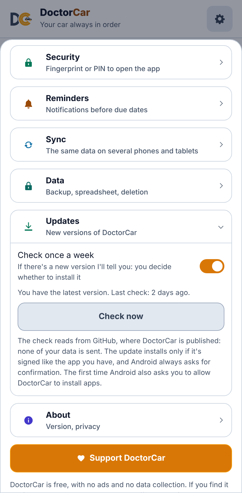
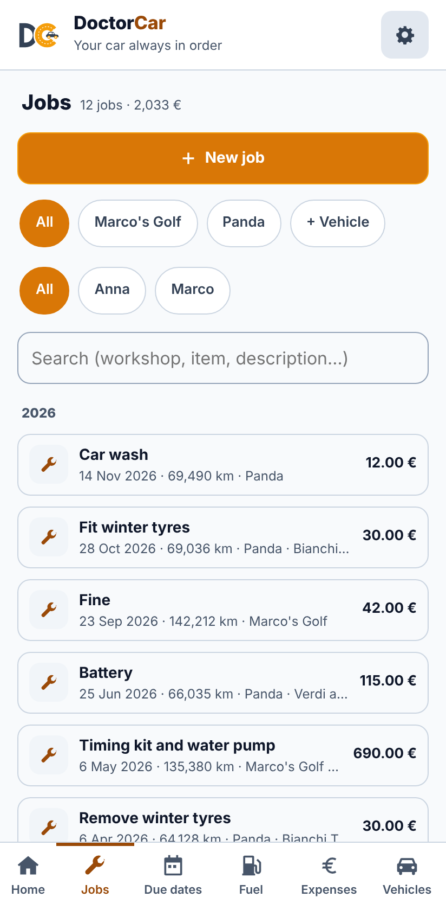
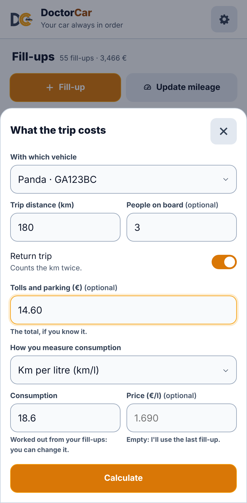
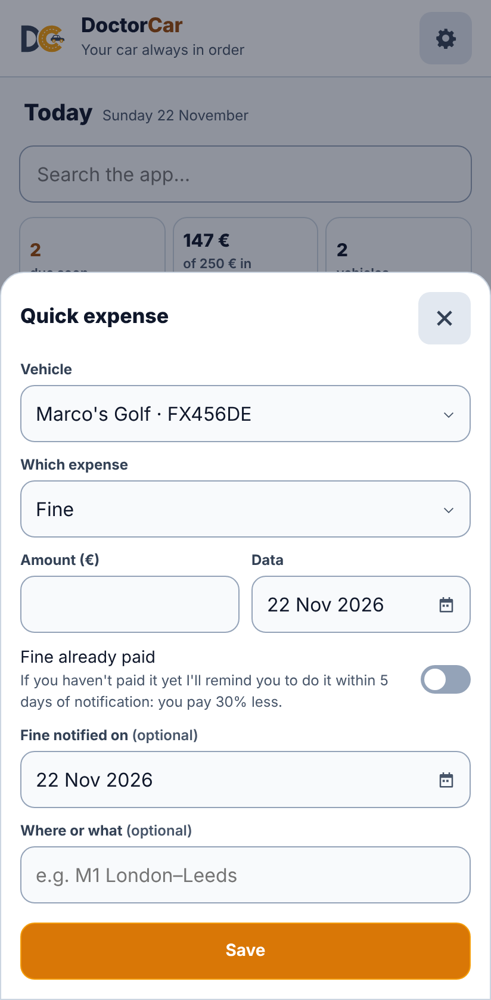
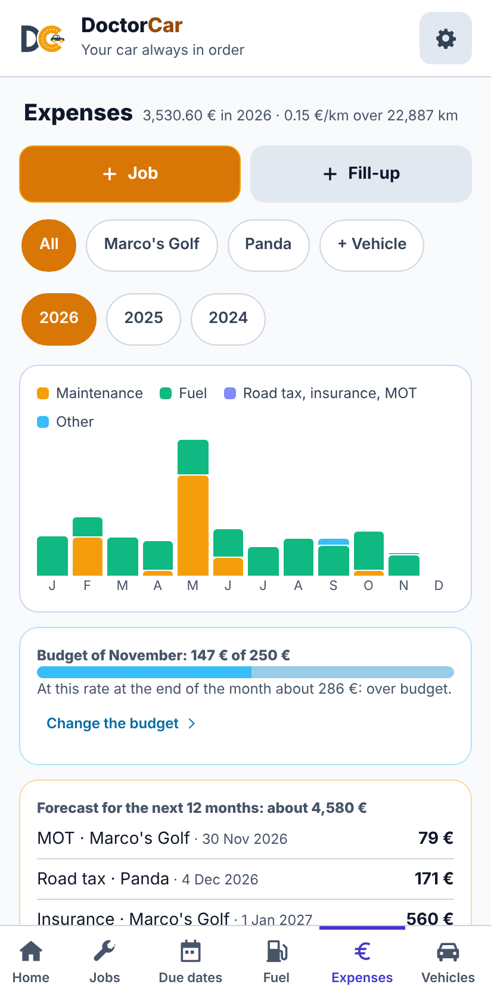
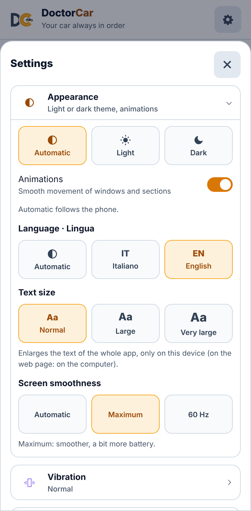
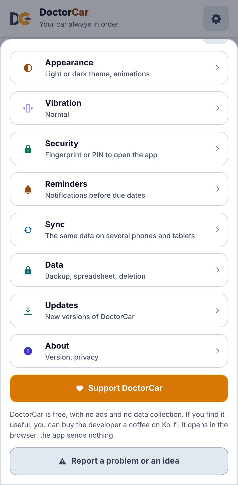

DoctorCar
Your car always in order
Tutorials
How to do it, step by step: one card for each thing
App version {{VERSIONE}} · updated on {{DATA}}
The first time, on a phone with Android 10 or newer.

When a new version comes out (DoctorCar checks by itself once a week).

On first start, or from Vehicles.

When Home shows «Complete a due date».

When you don't know where it is.

To see everything about a car.

After the mechanic, the tyre shop, the MOT…
For the yearly service.
To keep proof of what you paid.

«When did I change the brake pads?»

You paid the road tax or did the MOT.

For something that isn't there yet.
Documents and permits that expire.
To see it in the phone's calendar too.
Summer, winter or all-season.
In November and April.

Once a month, 2 minutes.

You hear a noise or a warning light comes on.
The mechanic sorted it out.

Oil, bulbs, wiper blades you keep aside.
Before going to the parts shop.

At the fuel station.
Now and then, even without filling up.

Before leaving, or to split the costs.

Toll, parking, car wash, fine.

To keep expenses under control.
As soon as you get out of the car.
Pay-and-display or disc parking.
In the Android app.
Without opening the app.
To be quicker.
To have the same data in the family.
Several people on the same data.
To exclude it.

Before changing phone, and now and then.
On a new phone.
To stop thinking about it (Android app).
From Fuelio, Drivvo, Simply Auto, aCar, Fuelly.
To sell the car or go to the mechanic.

To adapt the app.

To use DoctorCar in English or Italian.
To protect your data.

To write to us.
If you find the app useful.
Before selling or giving away the phone.